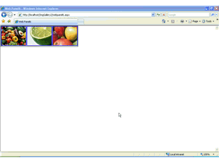
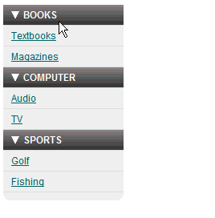
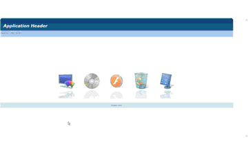
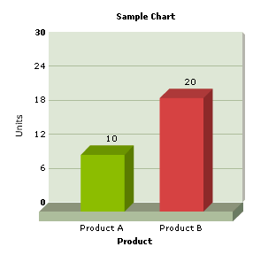

Web User Controls like the following can be included in GeneXus applications:
|
 |
 |
 |
 |
After a User Control is installed in GeneXus it should be used as any other standard control. This means that:
To start working with User Controls, you can try with any of the User Controls which are available by default in the GeneXus toolbar, or download a new one from the GeneXus marketplace
The User controls catalog is useful documentation to start with, as it shows some of the User Controls available and how to use each of them.
To see more User Controls and share and discuss or ask experts about User Controls, check the User Controls forum.